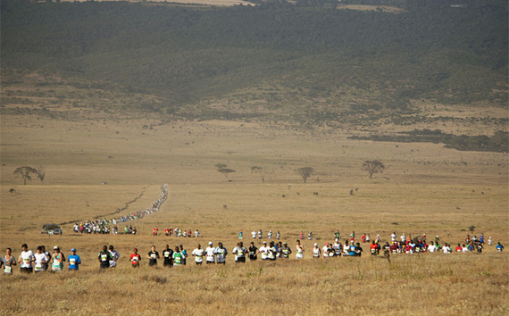

The Safaricom Marathon

Located in the middle of nowhere in a national park, this marathon features wild animals like lions, jaguars, and giraffes. No need to worry, there will be 24 hour helicopter assistance along the run and there will be aid stations.